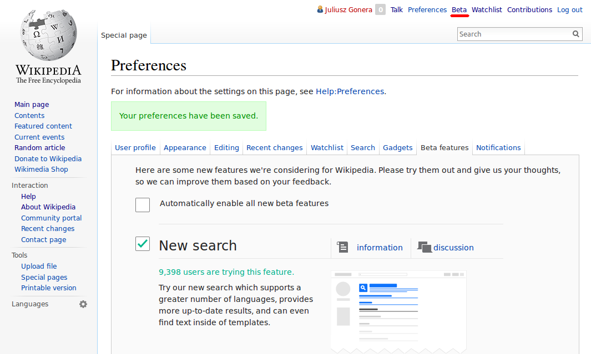
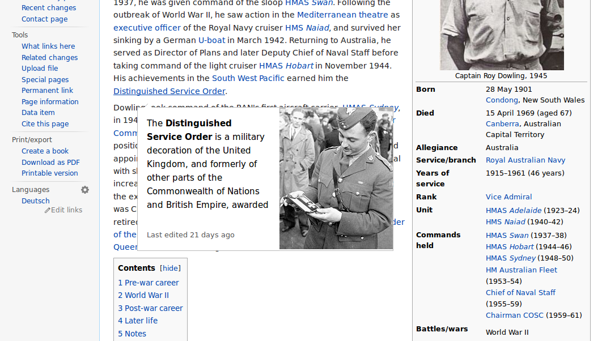
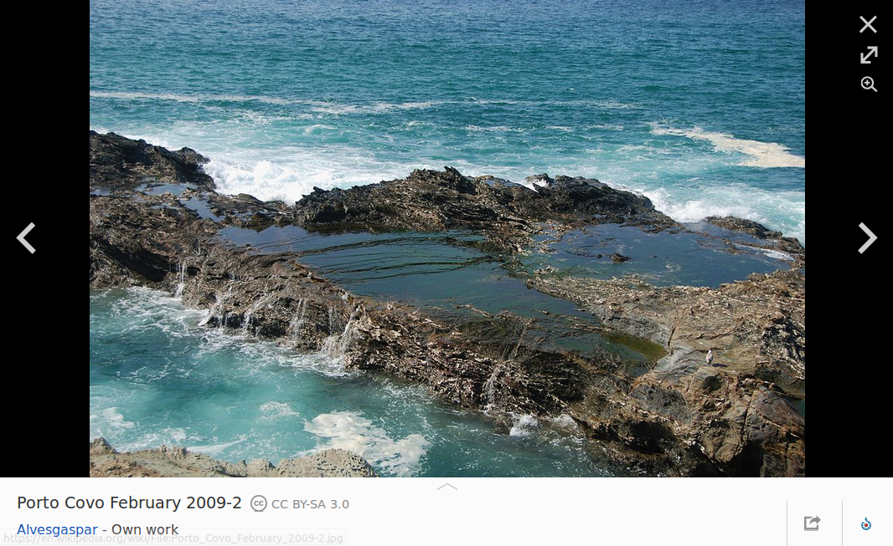

Estudiante Erasmus en Universidad Politécnica de Valencia.
Fundación Wikimedia
La misión de la Fundación Wikimedia es facultar y animar a la gente de todo el mundo a reunir y desarrollar contenido educativo neutral bajo una licencia de contenido libre o en el dominio público, y a difundirla de manera efectiva y global.
(...) La Fundación proporcionará y mantendrá el contenido educativo de sus proyectos en Internet sin cargo alguno a perpetuidad.
Imagina un mundo en donde cada persona del planeta pueda tener acceso libre a la suma total de todo el conocimiento humano. Eso es lo que estamos haciendo.
Jimmy Wales
Entonces trabajas gratis?
No.
El contenido esta creado por voluntarios.
Hacer que Wikipedia (y otros proyectos) funcione es un trabajo de hornada completa.
Nuestros fondos vienen de donaciones, tanto de los particulares como de las empresas.
Dónde?
San Francisco, California, USA (~120 personas)
Resto del mundo, a distancia (~50 personas)
Quien?
38% extranjeros (no de EEUU)
72% han vivido fuera de su país
46% son wikipedistas
2012-2013 en numeros
Mitad de los mil millones lectores cada mes...
...en más que 280 idiomas.
Colaboradores hiceron 160.2 millones de cambios,
añadieron 4.9 millones de artículos en Wikipedia,
subieron 4.3 millones de imágenes, ficheros de audio y video.
var luke = new Jedi('Luke');
var bob = new Cat('Bob');
bob.attack(luke);
// => 'Bobcat attacks Luke with fangs'
luke.attack(bob);
// => 'Luke attacks Bobcat with light sabre'
Beta features

Hovercards

Media Viewer

Wikipedia para todos
Wikipedia Zero, un programa que permite el acceso móvil de tarifa de datos gratuito a las páginas de Wikipedia en países del tercer mundo.